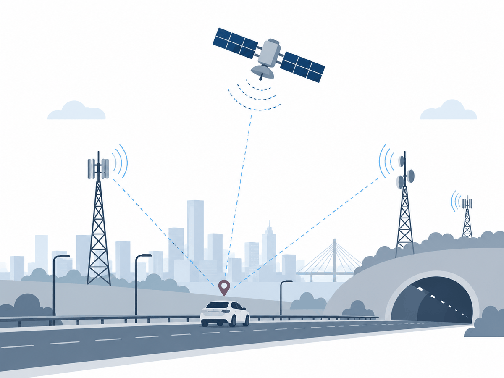

YERKON
YERKON is a proposal for road transport to depend less on foreign satellite systems for position. Low cost broadcast units go onto roadside points that are already standing, and a receiver works out where it is by measuring range against the units around it.

What it proposes
The Ministry of Transport and Infrastructure already has points on the power and communications network: intelligent transport cabinets, roadside units, traffic lights, tunnel lighting and toll gates. YERKON adds a low cost radio board to those points. The board broadcasts its identity and the position surveyed when it was installed.
A broadcast unit costs between 1000 and 1600 lira. Nothing here needs a new mast, a new power feed or a network of atomic clocks, which is what keeps the cost this low.
YERKON does not try to replace the satellite systems. While they work, the two answers sit side by side, and a disagreement between them makes a spoofing attack visible.
The three rows the simulation filled, at the ninety fifth percentile of horizontal error. Each one was run over real ground near Ankara.